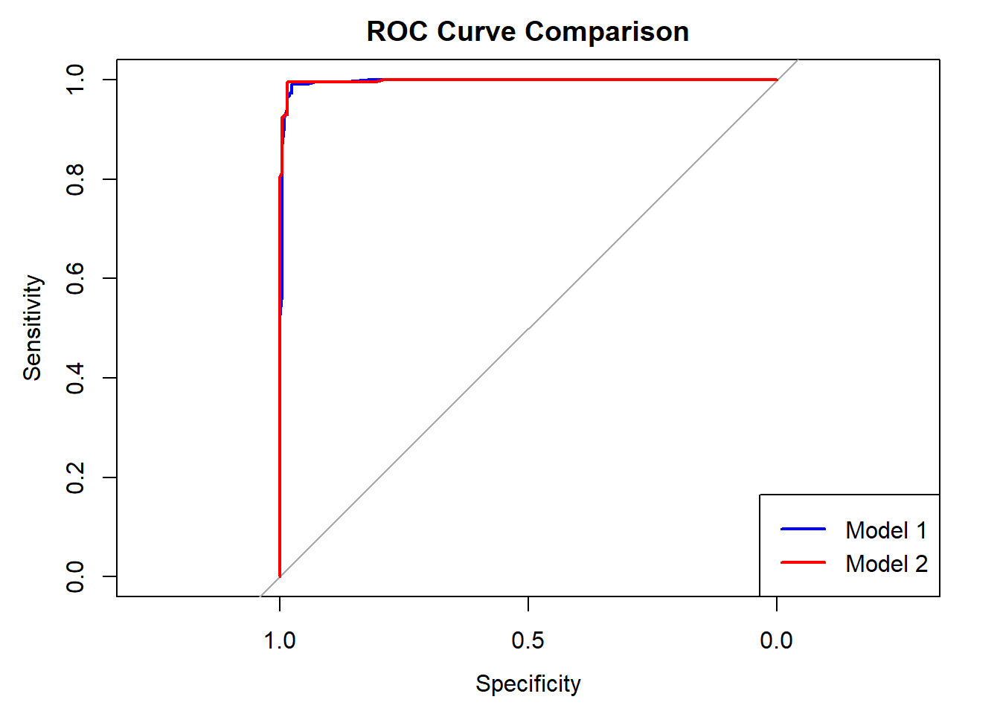

impeach_data <- read.csv("impeach.csv", header = TRUE)
# Remove rows with missing values
impeach_data <- na.omit(impeach_data)
# Define binary impeachment variable
impeach_data$impch <- ifelse(impeach_data$votesum > 0, 1, 0)MLE Problem Set 3
1. Binomial Likelihood
(a) Log-Likelihood Function
Given that \(X \sim \text{Bin}(n, p)\), the probability mass function (PMF) is:
\[ P(X = x) = \binom{n}{x} p^x (1 - p)^{n - x} \]
Taking the natural logarithm:
\[ \log \mathcal{L}(p) = \log \binom{n}{x} + x \log p + (n - x) \log (1 - p) \]
Since the binomial coefficient \(\binom{n}{x}\) does not depend on \(p\), it is omitted in differentiation:
\[ \log \mathcal{L}(p) = x \log p + (n - x) \log (1 - p) \]
(b) Score Function
The score function is:
\[ S(p) = \frac{\partial}{\partial p} \log \mathcal{L}(p) = \frac{x}{p} - \frac{n - x}{1 - p} \]
(c) Maximum Likelihood Estimator (MLE)
Setting the score function to zero:
\[ \frac{x}{p} - \frac{n - x}{1 - p} = 0 \]
Solving for \(p\):
\[ \hat{p} = \frac{x}{n} \]
Thus, the MLE of \(p\) is:
\[ \hat{p} = \frac{x}{n} \]
(d) Observed Fisher Information
\[ I(p) = -\frac{\partial S(p)}{\partial p} = \frac{x}{p^2} + \frac{n - x}{(1 - p)^2} \]
Evaluating at \(\hat{p}\):
\[ I(\hat{p}) = \frac{n}{\hat{p}(1 - \hat{p})} \]
(e) Relation to Bernoulli Variance
For a Bernoulli random variable \(Y \sim \text{Bern}(p)\), the variance is:
\[ \text{Var}(Y) = p(1 - p) \]
Thus, the Fisher information:
\[ I(p) = \frac{n}{p(1 - p)} \]
is the inverse of the Bernoulli variance scaled by \(n\).
2. Clinton Impeachment Vote
(a) Constructing the Binary Variable
(b) Data Summary
summary(impeach_data) votesum clint96 partyid aflcio97
Min. :0.000 Min. :26.00 Min. :0.0000 Min. : 0.00
1st Qu.:0.000 1st Qu.:42.00 1st Qu.:0.0000 1st Qu.: 0.00
Median :2.000 Median :48.00 Median :1.0000 Median : 50.00
Mean :1.844 Mean :50.25 Mean :0.5245 Mean : 51.41
3rd Qu.:4.000 3rd Qu.:57.00 3rd Qu.:1.0000 3rd Qu.:100.00
Max. :4.000 Max. :94.00 Max. :1.0000 Max. :100.00
ccoal98 impch
Min. : 0.00 Min. :0.0000
1st Qu.: 0.00 1st Qu.:0.0000
Median : 58.00 Median :1.0000
Mean : 53.16 Mean :0.5268
3rd Qu.:100.00 3rd Qu.:1.0000
Max. :100.00 Max. :1.0000 (c) Logistic Regression Model
model1 <- glm(impch ~ partyid + clint96, data = impeach_data, family = binomial)
summary(model1)
Call:
glm(formula = impch ~ partyid + clint96, family = binomial, data = impeach_data)
Coefficients:
Estimate Std. Error z value Pr(>|z|)
(Intercept) 11.22019 3.25291 3.449 0.000562 ***
partyid 7.95961 1.03158 7.716 1.20e-14 ***
clint96 -0.31520 0.07542 -4.179 2.92e-05 ***
---
Signif. codes: 0 '***' 0.001 '**' 0.01 '*' 0.05 '.' 0.1 ' ' 1
(Dispersion parameter for binomial family taken to be 1)
Null deviance: 593.487 on 428 degrees of freedom
Residual deviance: 57.753 on 426 degrees of freedom
AIC: 63.753
Number of Fisher Scoring iterations: 9(d) Second Model Including Conservatism Measure
model2 <- glm(impch ~ partyid + clint96 + ccoal98, data = impeach_data, family = binomial)
summary(model2)
Call:
glm(formula = impch ~ partyid + clint96 + ccoal98, family = binomial,
data = impeach_data)
Coefficients:
Estimate Std. Error z value Pr(>|z|)
(Intercept) 5.01373 4.15379 1.207 0.22742
partyid 5.77896 1.11994 5.160 2.47e-07 ***
clint96 -0.22278 0.08957 -2.487 0.01287 *
ccoal98 0.05572 0.01776 3.137 0.00171 **
---
Signif. codes: 0 '***' 0.001 '**' 0.01 '*' 0.05 '.' 0.1 ' ' 1
(Dispersion parameter for binomial family taken to be 1)
Null deviance: 593.487 on 428 degrees of freedom
Residual deviance: 45.216 on 425 degrees of freedom
AIC: 53.216
Number of Fisher Scoring iterations: 9# Compare models using Likelihood Ratio Test
lr_test <- 1 - pchisq(2 * (logLik(model2) - logLik(model1)), df = 1)
lr_test'log Lik.' 0.0003990683 (df=4)(e) ROC Curve Comparison
library(pROC)
# Ensure response and predictions have the same length
predicted_prob1 <- predict(model1, type = "response")
predicted_prob2 <- predict(model2, type = "response")
roc1 <- roc(impeach_data$impch, predicted_prob1)
roc2 <- roc(impeach_data$impch, predicted_prob2)
plot(roc1, col = "blue", main = "ROC Curve Comparison", lwd = 2)
lines(roc2, col = "red", lwd = 2)
legend("bottomright", legend = c("Model 1", "Model 2"), col = c("blue", "red"), lty = 1, lwd = 2)
auc1 <- auc(roc1)
auc2 <- auc(roc2)
print(c(AUC_Model1 = auc1, AUC_Model2 = auc2))AUC_Model1 AUC_Model2
0.9959022 0.9975260 roc_test <- roc.test(roc1, roc2)
roc_test
DeLong's test for two correlated ROC curves
data: roc1 and roc2
Z = -0.80567, p-value = 0.4204
alternative hypothesis: true difference in AUC is not equal to 0
95 percent confidence interval:
-0.005574273 0.002326529
sample estimates:
AUC of roc1 AUC of roc2
0.9959022 0.9975260 Conclusion
- The logistic regression results confirm party affiliation as the strongest predictor.
- Clinton’s vote share in a district also negatively correlates with impeachment support.
- The likelihood ratio test assesses whether including conservatism improves model fit.
- The ROC curve comparison evaluates the classification performance of both models.
Appendix
I certify that we did not use any LLM or generative AI tool in this assignment.